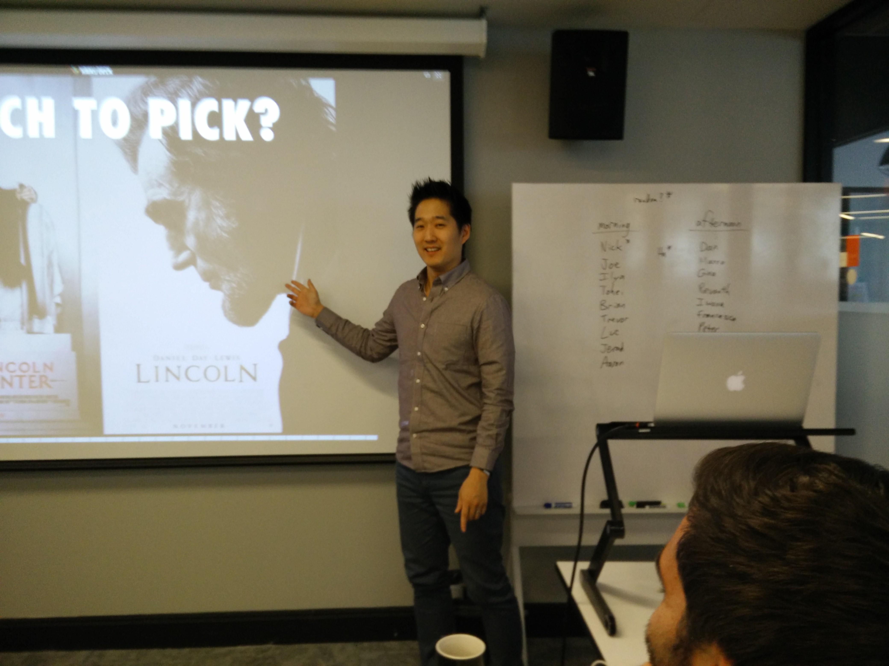

D-DAY
 Today was the day when everyone in our class got to present our Luther Projects; which is our 2nd project, but really our first major individual project in class involving a lot of coding/statistical methods.
Presentations
We spent the whole day presenting. Everyone presented for about 5-10 min and then had a Q&A time afterwards. People were tired from lack of sleep and just a long and very intense week, but everyone put on his or her best face and did a great job! We all went in having battled through a lot of different challenges and the experiences of humbly asking each other for help.
Cool Stuff
It was especially interesting because we were all presenting about very similar data, we all had to scrape movie data and use linear regressions. So seeing the different directions that people went was very cool! Seeing projects about predicting movie revenue, movie product sales, foreign gross, etc. really made me excited about the next project! It also gave me a lot of ideas on how to improve my own project...
Going Forward
Going forward, I want to really start thinking hard about my next project and final project so that I can be as prepared as possible with those. I will also write an entry in the next few days about my Luther project, and make that a more substantial entry. So be on the lookout for that!
Sneak Peek
Here are a couple teaser pictures from my presentation...

What I Learned Today:
Diary of a Mad Black Woman was INCREDIBLY popular amongst audiences.